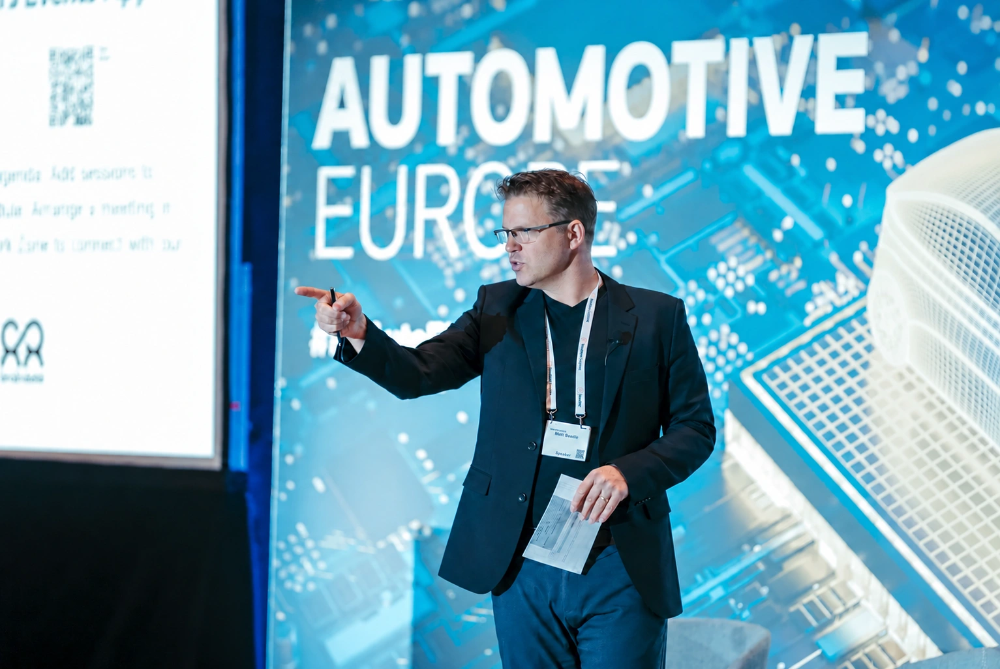
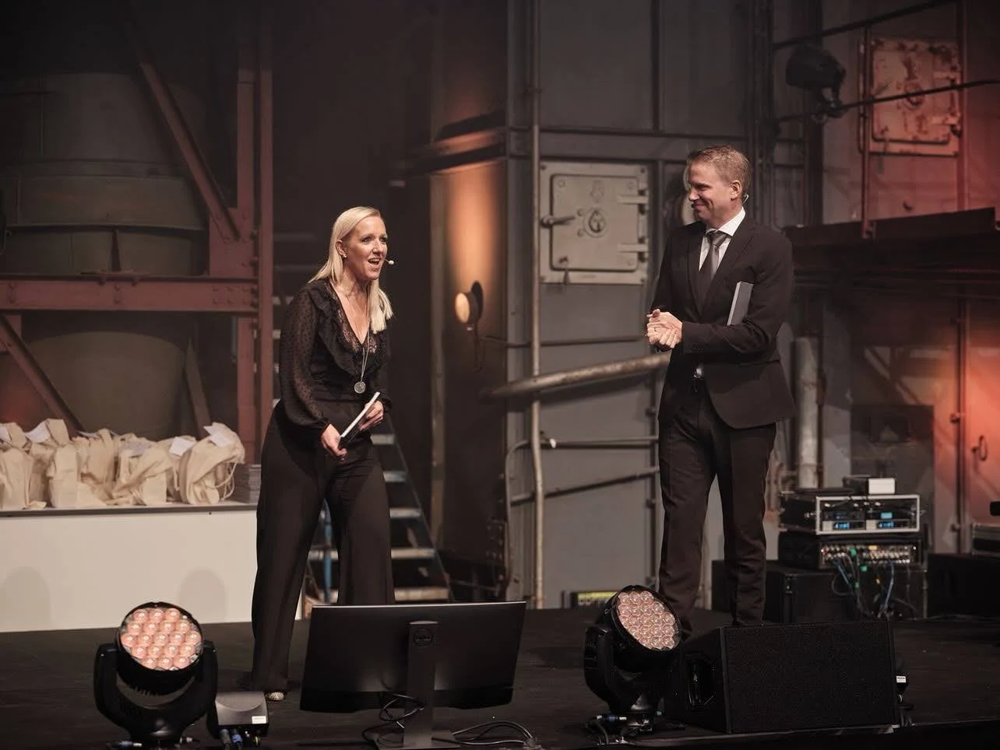

Live-Events & Konferenzen
Ein klarer Auftakt, stimmige Übergänge und die passende Energie für dein Publikum. Von Unternehmensveranstaltungen und Produktlaunches bis zu internationalen Konferenzen und Galaabenden.
Eventmoderation auf Deutsch & Englisch
Ich bin Matt Beadle, zweisprachiger Moderator, Host, MC und Presenter aus der Nähe von Bielefeld. Ich moderiere Unternehmensevents, Konferenzen, Messen, Panels und Galas sowie Marken- und Produktfilme und Live-Sendungen – auf muttersprachlichem Englisch und fließendem Deutsch. Klare Vorbereitung und eine zugewandte Präsenz helfen deinem Publikum, zu folgen, und deinen Gästen, sich wohlzufühlen.
Kundenstimmen lesen ↗
Die passende Rolle für deine Veranstaltung
Englisch als Muttersprache und fließendes Deutsch – mit der Vorbereitung und dem Gespür, sicher zwischen beiden zu wechseln.
Ein klarer Auftakt, stimmige Übergänge und die passende Energie für dein Publikum. Von Unternehmensveranstaltungen und Produktlaunches bis zu internationalen Konferenzen und Galaabenden.
Ein Gespräch mit Richtung. Gemeinsam mit deinen Gästen und auf Basis deines Briefings arbeite ich heraus, was zählt, mache komplexe Ideen verständlich und gebe dem Publikum einen Grund zuzuhören.
Natürlich präsentieren und dabei die Botschaft klar vermitteln. Erfahrung in TV- und Webformaten, Produktfilmen sowie Live- und Hybridproduktionen.
Wenn die Menschen im Raum selbst denken und gestalten sollen, schaffe ich einen Rahmen, der Beteiligung ermöglicht. Fokus, Mitwirkung und sinnvolle Fortschritte – auf Deutsch oder Englisch.
In Aktion erleben
Live-Bühnen, Broadcasts, Interviews, Sport und Markenfilme. Mein Moderationsshowreel auf Englisch und Deutsch.

Hinter dem Live-Moment
Wer ist im Raum? Was brauchen diese Menschen? Was soll sich verändert haben, wenn sie gehen?
Briefing, Recherche, Gespräche mit Gästen und ein Ablaufplan mit klarem roten Faden.
Zuhören, anpassen und den Ablauf auch dann in Bewegung halten, wenn ein Live-Moment eine unerwartete Wendung nimmt.
Ja. Ich arbeite auf muttersprachlichem Englisch und fließendem Deutsch – auch bei Veranstaltungen, deren Programm zwischen beiden Sprachen wechselt. Publikumsführung und Sprachwechsel stimmen wir im Briefing ab.
Ja. Ich kann schon in der Planung dabei sein und dich bei Ablauf, Gesprächen mit Gästen und Publikumsbeteiligung unterstützen – und anschließend die Veranstaltung selbst moderieren.
Einen Termin oder Zeitraum, den Ort, das Format, das Publikum und eine kurze Beschreibung deiner Ziele. Wenn das Programm noch entsteht, ist das ein guter Zeitpunkt für ein Gespräch.
Die Vorbereitung beginnt mit deinen Zielen, dem Publikum und den Kernbotschaften. Wir gehen Ablauf, Gäste, Namen und Aussprache durch und stimmen Anmoderationen, Übergänge und Fragen ab. Die Live-Veranstaltung soll natürlich wirken, weil ihre Grundlage klar ist.
Ja. Ich mache aus einem Thema ein fokussiertes Gespräch – mit Fragen, die unterschiedliche Perspektiven sichtbar und das Thema für das Publikum relevant machen. Zentrale Themen können wir vorher abstimmen und zugleich Raum für Nachfragen und spontane Momente lassen.
Ja. Neben Veranstaltungen vor Ort moderiere ich Live-Sendungen, Streams und Hybridformate. Das Briefing berücksichtigt beide Publikumsgruppen: wie wir die Kamera ansprechen, zugeschaltete Gäste einbinden und Programm, Bildschirme und Bühne miteinander verbinden.
Ja. Ich lebe in Deutschland und arbeite international. Meine Arbeit hat mich in über 20 Länder geführt – vor Publikum aus 40 Nationen und bislang insgesamt mehr als 30.000 Menschen. Nenne mir bei deiner Anfrage Ort, Termin und Programm, damit wir Reise, Vorbereitung und Ablauf gemeinsam besprechen können.
Ja. Meine Aufgabe ist, informierte Fragen zu stellen und dem Publikum zu helfen, dem Gespräch zu folgen. Briefingunterlagen und Gespräche mit deinen Fachleuten helfen mir, Begriffe, wichtige Unterschiede und die wesentlichen Erkenntnisse für dein Publikum zu verstehen.
Unbedingt. Je nach Format können wir Publikumsfragen, kurze Gespräche, Abstimmungen oder andere Formen der Beteiligung einbauen. Die Auswahl sollte zur Veranstaltung passen und sich für die Menschen im Raum gut anfühlen.
Live-Events brauchen Flexibilität. Ich bleibe eng am Produktionsteam, höre aufmerksam zu und gebe dem Publikum Orientierung, wenn sich Zeiten oder Pläne verschieben. Klare Zeichen und abgestimmte Kommunikationswege hinter der Bühne erleichtern das erheblich.
Die praktischen Details klären wir mit deinem Veranstaltungs- und Produktionsteam: Mikrofone, Bühnenaufbau, Folien, Kamerapositionen, Einsätze und Probenzeiten. Kündige Live-Schalten, Vorführungen oder andere komplexe Momente bitte früh an, damit wir sie gut planen können.
Das Honorar richtet sich nach Format, Dauer, Vorbereitung, Ort und zusätzlichen Anforderungen an Dreharbeiten oder Nutzungsrechte. Schick mir ein kurzes Briefing, dann erstelle ich ein Angebot für deine Veranstaltung.
Ja. Meine Vorträge beschäftigen sich mit intrinsischer Motivation, Stärken und positiver Führung. Zu den Keynotes ↗
Ein genauerer Blick
Lade die Moderatorenbroschüre herunter und erfahre mehr über meine Arbeit, meinen Ansatz und meine Erfahrung.
Erzähl mir von deiner Idee. Wir beginnen mit einem Gespräch.